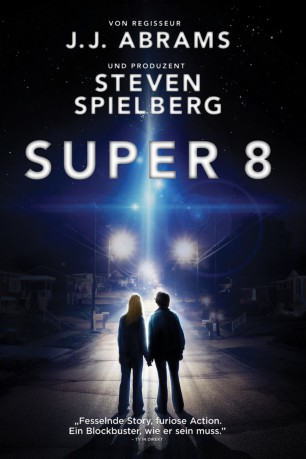
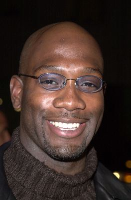

#4359 Super 8
 
 IMDB-Wertung: 7.1 / 10
IMDB-Wertung: 7.1 / 10  Tomatometer: 81
Tomatometer: 81  Metascore: 0
Metascore: 0 
Als sechs Teenager 1979 zu einer Super-8-Kamera greifen, um einen Film zu drehen, ahnen sie nicht, wie gruselig die Bilder sein werden, die die Kamera einfängt: Es ist stockfinstere Nacht. An einer abgelegenen Zugstrecke wollen die Freunde gerade ein paar Szenen drehen, als sie Zeuge eines grausamen Vorfalls werden. Ein Pickup rast auf den Gleisen direkt auf einen entgegenkommenden Zug zu und prallt frontal mit ihm zusammen. Die Stille der Nacht wird zerstört durch das ohrenbetäubende Bersten von Metall und der grellen Explosion des Benzintanks, gefolgt von einem rasenden Feuerball, aus dem sich mit roher Gewalt der entgleisende Zug seinen Weg bahnt. Fassungslos starren die Teenager auf die rauchenden Trümmer, als ein unheilvolles, mächtiges Pochen in einem der Waggons ihnen Angstschauer über den Rücken jagt. Was auch immer sich dort den Weg nach draußen bahnen will, hat mit menschlicher Kraft nichts zu tun.
Jahr: 2011
Dauer: 111 Minuten
FSK: 12
Land: USA Studio: Paramount PicturesTonspuren: DD5.1 - ,
Untertitel:
Auflösung: 1080p (1920x800) Größe: 8499 MB
Genre: Mystery, Sci-Fi, Thriller
Regisseur: J.J. Abrams
Drehbuch: Robert Carlock
Soundtrack:
Darsteller:
- Joel Courtney als Joe Lamb
- Jessica Tuck als Mrs. Kaznyk
 Joel McKinnon Miller als Mr. Kaznyk
Joel McKinnon Miller als Mr. Kaznyk- Ryan Lee als Cary
- Zach Mills als Preston
- Riley Griffiths als Charles Kaznyk
 Gabriel Basso als Martin
Gabriel Basso als Martin Kyle Chandler als Deputy Jackson Lamb
Kyle Chandler als Deputy Jackson Lamb Ron Eldard als Louis Dainard
Ron Eldard als Louis Dainard- AJ Michalka als Jen Kaznyk
- Andrew Miller als Kaznyk Twin
- Jakob Miller als Kaznyk Twin
- Britt Flatmo als Peg Kaznyk
 Elle Fanning als Alice Dainard
Elle Fanning als Alice Dainard Glynn Turman als Dr. Woodward
Glynn Turman als Dr. Woodward Noah Emmerich als Colonel Nelec
Noah Emmerich als Colonel Nelec-  Richard T. Jones als Overmyer
 Amanda Foreman als Lydia Connors - Ch 14 News Anchor
Amanda Foreman als Lydia Connors - Ch 14 News Anchor- David Gallagher als Donny
 Brett Rice als Sheriff Pruitt
Brett Rice als Sheriff Pruitt Michael Giacchino als Deputy Crawford
Michael Giacchino als Deputy Crawford Beau Knapp als Breen
Beau Knapp als Breen Bruce Greenwood als Cooper
Bruce Greenwood als Cooper Dale Dickey als Edie
Dale Dickey als Edie Dan Castellaneta als Izzy
Dan Castellaneta als Izzy- Ben Gavin als Deputy Milner
- Jay Scully als Deputy Skadden
 Michael Hitchcock als Deputy Rosko
Michael Hitchcock als Deputy Rosko James Landry Hébert als Deputy Tally
James Landry Hébert als Deputy Tally Thomas F. Duffy als Rooney
Thomas F. Duffy als Rooney- Teri Clark als Mrs. Babbit
- Caitriona Balfe als Elizabeth Lamb
- Robert B. Quiroz als Boy in EVAC
- Jason Brooks als Air Force Security
 Tim Griffin als Commando
Tim Griffin als Commando Marco Sanchez als Hernandez
Marco Sanchez als Hernandez- Emerson Brooks als Military Bus Driver
 Jonathan Dixon als Airman Nevil
Jonathan Dixon als Airman Nevil Patrick St. Esprit als Weapons Commander
Patrick St. Esprit als Weapons Commander Greg Grunberg als Sitcom Actor
Greg Grunberg als Sitcom Actor Katie Lowes als Tina
Katie Lowes als Tina- Steven Andrews als 82nd Airborne Trooper , uncredited
- Barrett Carnahan als Military Personnel , uncredited
- Graham Clarke als Airforce Airman Korne , uncredited
 Andrew Constantini als National Guard , uncredited
Andrew Constantini als National Guard , uncredited- Matthew Crawley als Airforce Airman Taylor , uncredited
 Walter Cronkite als Himself - CBS News Anchor , archive footage, uncredited
Walter Cronkite als Himself - CBS News Anchor , archive footage, uncredited- Mike DeMille als Urgent Man , uncredited
 Mel Fair als Local News Reporter , uncredited
Mel Fair als Local News Reporter , uncredited- Brandon Hirsch als Air Force Airman , uncredited
Datei: X:\2011(N-Z)\Super 8 (2011, FSK12, 1920x800).mkv seit 12.09.2016
Festplatte: HD 2011(G-Z)
 Es gibt insgesamt 132 Filme in der Gruppe '2011(N-Z)'
Es gibt insgesamt 132 Filme in der Gruppe '2011(N-Z)'